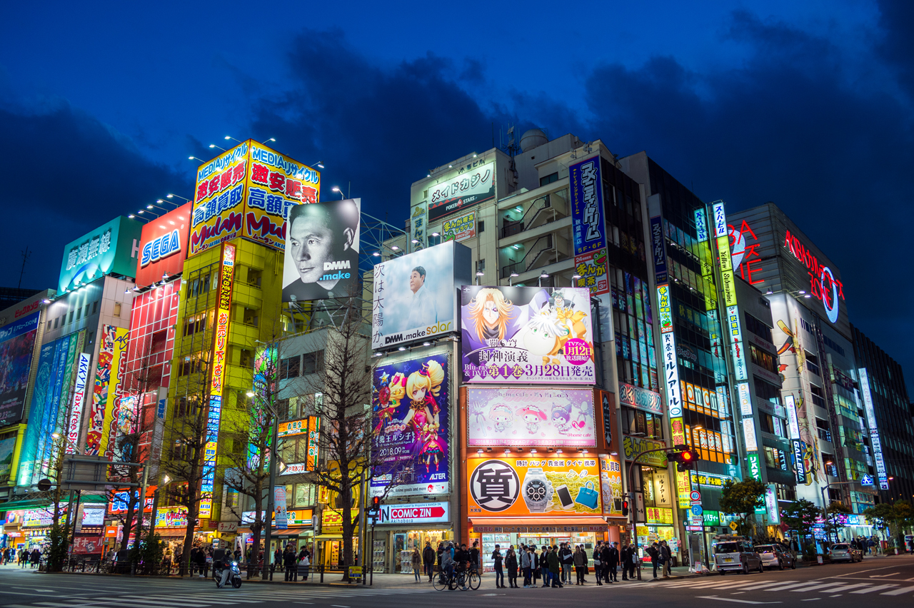
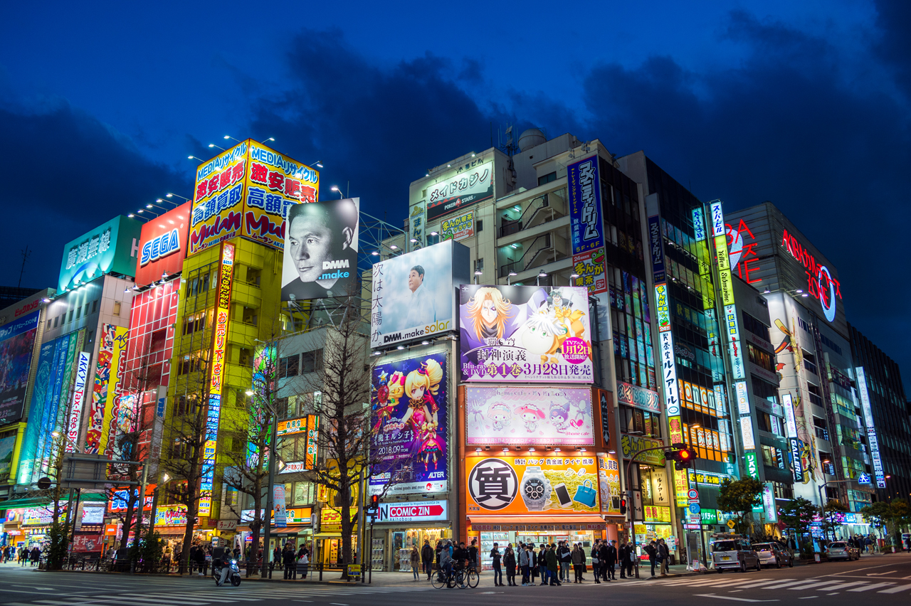

Discover Tokyo
Experience the perfect blend of tradition and innovation
Welcome to Tokyo Explorer
Discover the vibrant metropolis of Tokyo, where tradition meets innovation. From the historic temples and serene gardens to the bustling streets and towering skyscrapers, Tokyo offers a unique blend of old and new. Explore iconic landmarks like the Tokyo Skytree, Shibuya Crossing, and the Imperial Palace. Indulge in world-renowned cuisine, from sushi and ramen to tempura and wagyu beef. Whether you're a history buff, a foodie, or an adventure seeker, Tokyo has something for everyone. Join us as we uncover the hidden gems and must-visit attractions of this dynamic city.
Must-Visit Attractions

Senso-ji Temple
Tokyo's oldest Buddhist temple, featuring a massive paper lantern and traditional architecture.

Tokyo Skytree
The tallest tower in the world, offering breathtaking views of the city from its observation decks.

Shibuya Crossing
One of the busiest pedestrian crossings in the world, surrounded by neon signs and giant video screens.

Meiji Shrine
A serene Shinto shrine dedicated to Emperor Meiji and Empress Shoken, surrounded by a beautiful forest.

Tokyo Imperial Palace
The current Imperial Palace is located on the former site of Edo Castle, a large park area surrounded by moats and massive stone walls in the center of Tokyo, a short walk from Tokyo Station. It is the residence of Japan's Imperial Family.

Tokyo Station
Tokyo Station is a major railway hub in Chiyoda, Tokyo, known for its iconic red-brick facade and extensive network of train lines, including Shinkansen bullet trains.
Ueno Park
Ueno Park is a spacious public park in Tokyo, known for its beautiful cherry blossoms in spring and a variety of cultural attractions, including museums, a zoo, and historic temples. It's a popular spot for both locals and tourists to enjoy nature, art, and history in the heart of the city.

Shinjuku Gyoen National Garden
Shinjuku Gyoen National Garden is a serene oasis in the heart of Tokyo, featuring a harmonious blend of traditional Japanese, French, and English garden landscapes. It's especially renowned for its stunning cherry blossoms in spring, making it a popular spot for hanami (flower viewing) and relaxation.
Local Cuisine

Sushi
Fresh, delicate slices of raw fish on vinegared rice.
Ramen
Hearty noodle soup with various toppings and flavors.

Tempura
Lightly battered and deep-fried seafood and vegetables.
Wagyu Beef
High-grade, marbled beef known for its tenderness and flavor.
Mochi
A traditional Japanese rice cake made from glutinous rice, known for its chewy texture and often filled with sweet or savory fillings.
Taiyaki
Japanese fish-shaped cake typically filled with sweet red bean paste, custard, chocolate, or other delicious fillings.
Okonomiyaki
Okonomiyaki is a savory Japanese pancake made with a batter of flour, eggs, shredded cabbage, and various ingredients like meat, seafood, and vegetables, often topped with a variety of condiments.
Yakiniku
Yakiniku is a Japanese style of grilling bite-sized pieces of meat, typically beef, over a charcoal or gas grill, often enjoyed with dipping sauces and side dishes.
Getting Around Tokyo
Tokyo Gallery

 
